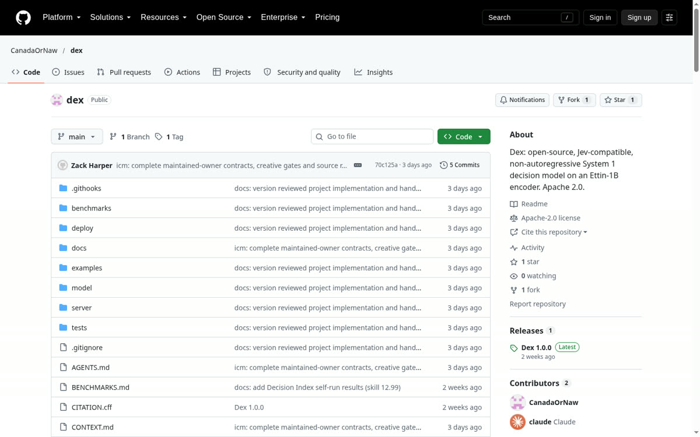

Open-Source Non-Autoregressive Decision Model
Calling a commercial decision API for every classification, routing, or command-gating check in an agent loop costs money per call and adds 780–890 ms of network latency.
Engineered SystemI built and released Dex-1B (github.com/CanadaOrNaw/dex · huggingface.co/CanadaOrNaw/dex-1b), a local drop-in replacement for the TypeSafe Jev API (POST /v1/systemone). It pairs the 1.1B-parameter bidirectional Ettin encoder (784M parameters fine-tuned; embeddings and lowest 7 of 28 layers frozen) with a custom typed decision head trained from scratch on my own RTX 3070 Ti (8 GB) in bfloat16. Trained for 3 epochs against strictly proper scoring rules (cross-entropy + KL divergence) with 30% option shuffling across ~1,080 distinct instruction wordings.
